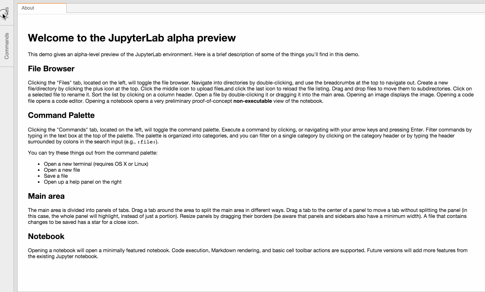

An extensible computational environment for Jupyter.
This is a very early pre-alpha developer preview. It is not ready for general usage yet.

The Jupyter server extension source files are in the jupyterlab/ subdirectory. To use this extension, you need the Jupyter notebook server version 4.2 or later.
pip install jupyterlab
jupyter serverextension enable --py jupyterlab
Start up Jupyterlab with the command:
jupyter lab
Open a browser to the notebook server's URL (e.g., http://localhost:8888).
You will need npm (preferably version 5 or later). First fork the repo in the GitHub UI and then clone locally:
git clone https://github.com/<your-github-username>/jupyterlab.git
cd jupyterlab
npm install
pip install -e . # will take a long time to build everything
jupyter serverextension enable --py jupyterlab
Start up Jupyterlab with the command:
jupyter lab
Open a browser to the notebook server's URL (e.g., http://localhost:8888).
When you make a change to JupyterLab npm package source files, run:
npm run build:serverextension
to build the changes and refresh your browser to see the changes.
To have the system build after each change to the source files, run:
npm run watch:serverextension
and refresh the browser after each sucessful update.
The npm package source files are in the src/ subdirectory.
Prerequisites
npm install --save jupyterlab
git clone https://github.com/jupyter/jupyterlab.git
cd jupyterlab
npm install
npm run build
Rebuild
npm run clean
npm run build
npm run build:serverextension
Follow the source build instructions first.
npm test
Follow the source build instructions first. Requires a Python install with the Jupyter notebook (version 4.2 or later).
npm run build:examples
Change to the appropriate example in the examples directory and run python main.py.
Follow the source build instructions first.
npm run docs
Navigate to docs/index.html.
The runtime versions which are currently known to work are listed below. Earlier versions may also work, but come with no guarantees.
Note: "requirejs" must be included in a global context (usually as a
<script> tag) for Comm targets.
Follow the package install instructions first.
Any bundler that understands how to require() files with .js and .css
extensions can be used with this package.
Note: This npm module is fully compatible with Node/Babel/ES6/ES5. Simply omit the type declarations when using a language other than TypeScript.
Generated using TypeDoc